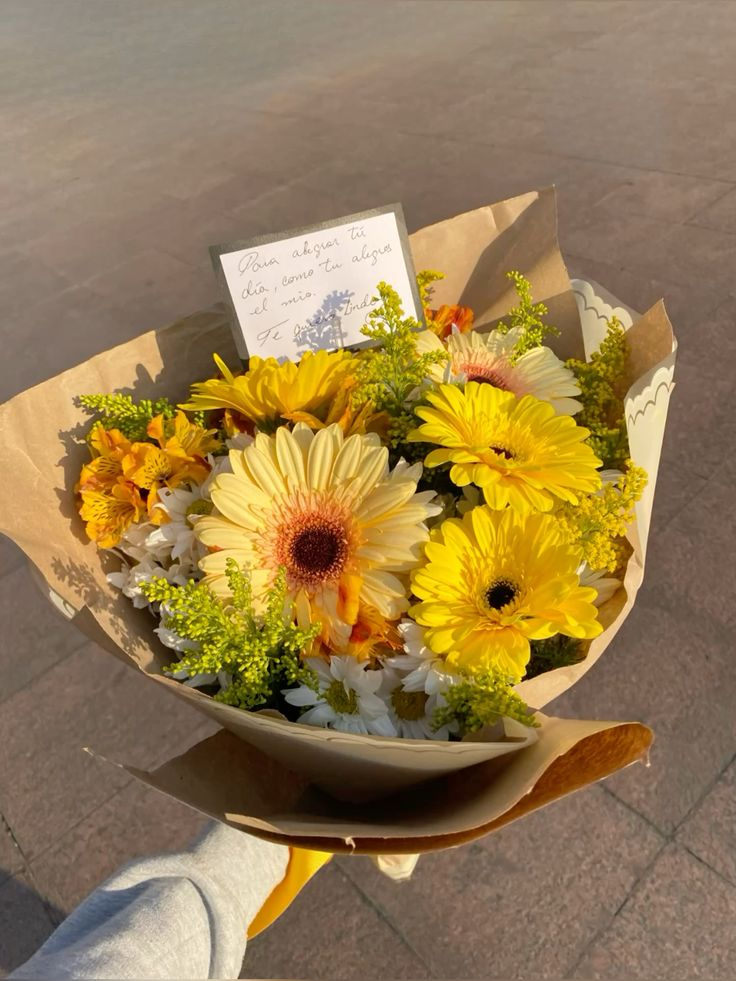
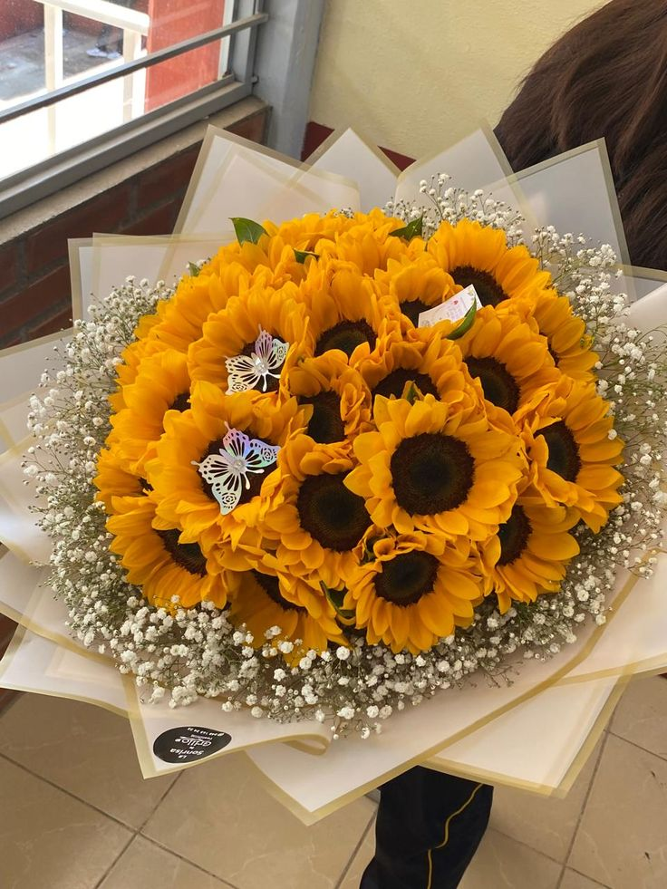
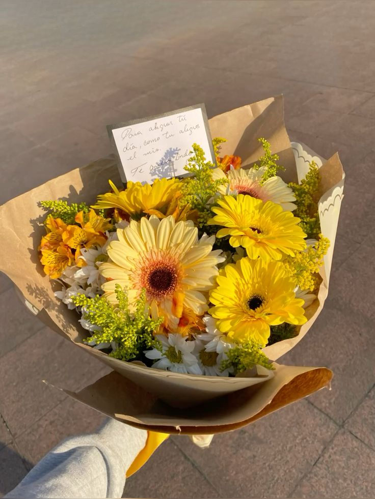
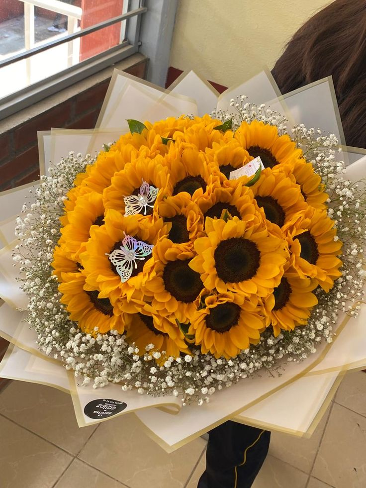
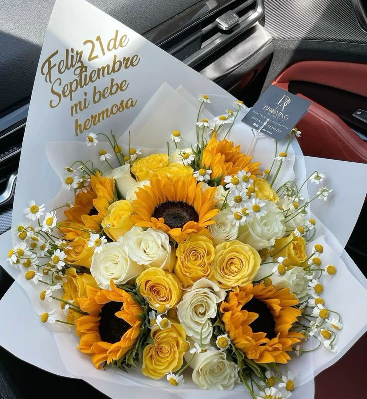
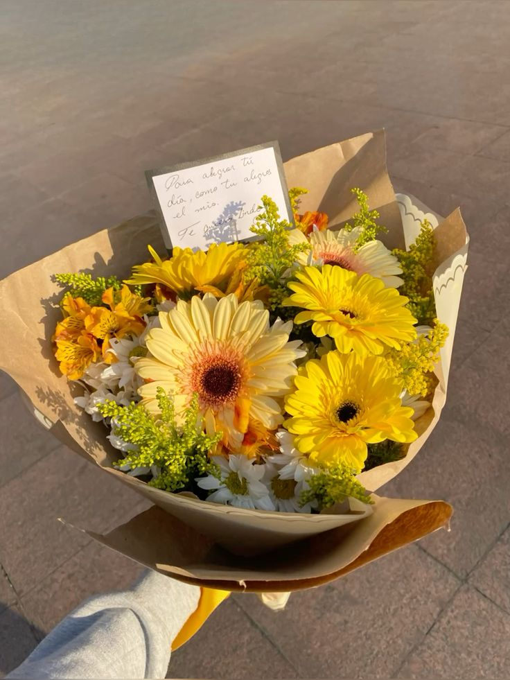
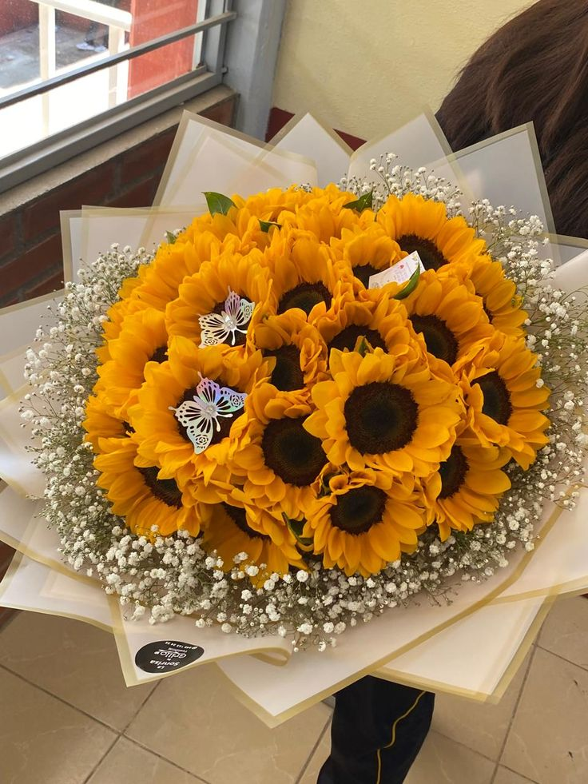

 
 
Porque regalar flores amarillas... es regalar luz, amor y esperanza.
  
RAMO DE ROSAS Y GIRASOLES Y FLORES SILVESTRES = 850.00 Lps
RAMO DE ROSAS Y BABY CON MARIPOSA= 1,000.00 Lps
RAMO DE GERBERAS Y MARGARITAS = 600.00 Lps
RAMO GRANDE DE GIRASOLES = 2,500.00 Lps
Regalar flores amarillas es un gesto de alegría, optimismo y esperanza, simbolizando buenos deseos para un nuevo comienzo.
Floristeria DulceAmor esta ubicada en Macuelizo Sanra Barbara, Frente al parque central
Puedas agendar tus pedidos al siguiente contacto:
TELEFONO: +504 8909-3456
INSTAGRAM: DULCE_FLORISTERIAAMOR
FACEBOOCK: DULCEAMOR-FLORISTERIA
LOS MEJORES DETALLES PARA TU ESPOSA, AMANTE, AMIGA O TU MADRE.
FLORES ROJAS FLORES ROSADAS FLORES MORADAS FLORES MIXTAS